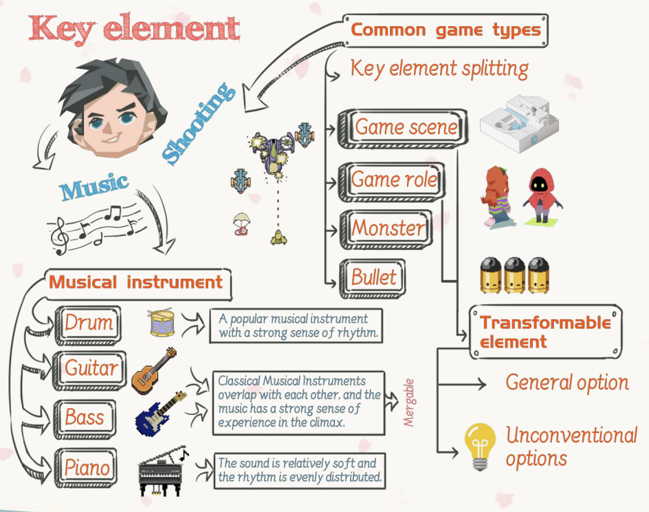
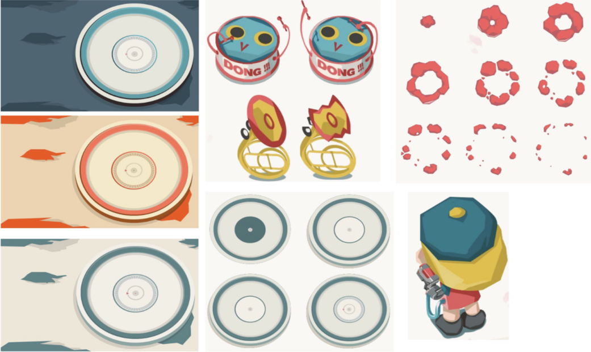
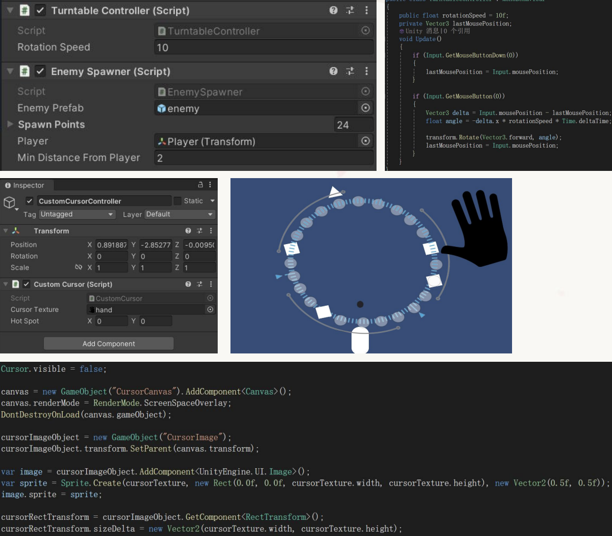
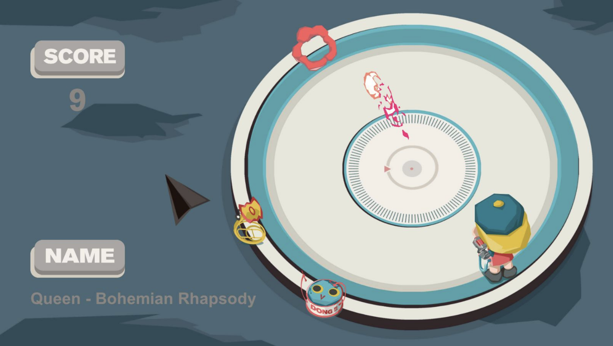

Inspired by The Art of Game Design, I wanted to break the conventional rule where the player only controls the protagonist. In most shooters, you are the hero — but what if you controlled everything around the hero instead?
In Rhythm Disc, the player controls the turntable (the environment) and the instrument monsters in the scene, while indirectly helping the main character survive. The core tension comes from managing both the music and the battlefield at the same time.

The game's setting is a disc player. Monsters are designed after musical instruments — Piano, Guitar, and Drum — each corresponding to a different zone on the turntable. As the player moves through zones, the matching instrument track becomes dominant and a different bullet type is activated.
Soft color palette. Gentle rhythm. Enemies move slower — but don't let your guard down.
Fierce orange-red tones. High-intensity beat. Enemy spawn rate spikes dramatically.
Tough and edgy. Mid-tempo chaos. Enemies hit harder and require precise timing.

All core systems were built in Unity (C#). The most technically interesting part was synchronizing enemy spawning with actual music beats in real time.
-
Turntable ControllerScripted the rotation logic and a custom cursor to simulate "rubbing the disk" — the player physically scrubs the turntable with their mouse, which controls the game environment.
-
Beat Detection PipelineWrote a Python script to crawl the music beats from Bohemian Rhapsody and output a JSON file containing the beat array. Unity reads this file at runtime to synchronize enemy spawning with the music.
-
Dynamic Zone SpawningThree polygon collider regions define the Piano / Drum / Guitar zones. When the player enters a zone, the corresponding audio track becomes dominant, the background changes, and enemies of that instrument type begin spawning at random positions on beat.
-
Multi-Track AudioThe original Bohemian Rhapsody track was separated into three instrument stems (piano, drums, guitar). Each stem is tied to its zone — giving players the feeling of "mixing" the song as they move through the level.

The final game puts the player in the role of a DJ-commander: spin the turntable to navigate zones, shoot instrument monsters before they overwhelm the main character, and feel the rhythm of Bohemian Rhapsody shift as you fight. Each zone demands a different playstyle.
